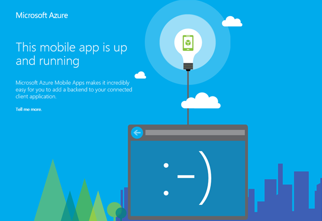

Duration
10 minutes
Goals
In this lab exercise, you will create a new Azure mobile service using the Azure portal.
Challenge
This exercise can be completed using the Azure management portal by adding a new Mobile App. This new service will hold question and response data for a survey application we will be working with later in the class.
If you are unfamiliar with the portal, or need some guidance, use the step-by-step instructions below to complete the exercise.
Steps
Create a new Azure service
- Open a web browser and point it at the Azure portal (https://portal.azure.com/) and log in to your account.
- Use the + New button in the sidebar to create a new Mobile app using the Web + Mobile > Mobile App template as shown below.
- Fill in the required details for your new mobile app:
- Our application will be a voting/survey application so pick an appropriate name that Azure allows. Remember this will be used to generate your private URL to the service, so it must be unique among all Azure names.
- Create a new Resource Group to associate all your app resources with so you can delete them when you are finished with the exercise.
- Within the Service Plan, select a pricing tier. It's recommended you use S1 - Standard as a minimum, but you can select any tier, including the free tier, and it should work.
- In your Service Plan, you can also select a region. Pick a region close to you. For example, here I have selected the Free tier in the South Central region:
- It will take a few minutes to create the application, but once it's finished it should display the app dashboard:
Test the service
Check the service and verify that it is running by clicking the URL link in the app dashboard.
This should open a web browser with the default page:
Summary
In this exercise, you created a new mobile app in the Azure portal.